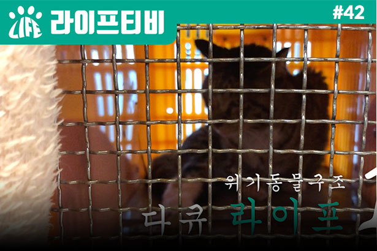

A society where humans and animalscan coexist
" We create life to make a world where animals and people are happy . "
LIFE Activity News
Life, an animal protection organization, celebrated its 1st anniversary today.Even in difficult circumstances, we do not lose our original focusWe have come this far thanks to our sponsors and supporters.On this happy day, with the members due to CoronaWe are very sorry that we could not make a seat.
Read MoreLIFE Activity News
Thank you for your warm heart and support in 2021. Thank you again. In 2022, we will reward you with more animal protection activities.thank you happy new year! We will create a world where animals and humans coexist.
Read MoreDONATIONS Now, Please Do It With Life. Your participation saves more lives
"Life, a social animal protection organization that respects the life of animals, moves forward together. ”
- 100+ ANIMALS
- 50+ completion
OUR BLOG Life TV
-
I'M A SOOK, A POPULAR
SLEIGH LOOSEYeontong who hates other cats so much Why do you only like sukjae? I was so curious, so I researched Sookja! As a result of the examination, the cat was extremely healthy.mThere was absolutely no risk of harm to the pregnant woman and the unborn child.
READMORE
-

[ Crisis Animal Rescue
Documentary Day 1 ]...I received a tip. The child in the photo looked so dangerous. The belly is stripped of leather, revealing skin tissue, and the hind legs are unusable, dragging and dragging a cat that walks strugglingly. Life urgently came out to the scene. * The alley between ...
READMORE -
[Crisis Animal Rescue
Documentary Day 1] ...There was a greasy, skinny body, a kitten who kept his life on the road chewing on even a skewer of schnitzel. Life rescued the kitten with a box of sprouts and from then on the cat got the name sprouts, right? Herbs that have grown so beautifully differently than before, finally!! I met a warm family~??!...
READMORE
-
The greens that used
to chew yakitori on ...There is a mackerel Tabby cat in the feeding station in front of the Life office that occasionally comes for a meal. The name is "Gilfat" and a roadkeeper who had been invisible for a while appeared in front of the office.What's going on with this? A large scab sits on his face, ...
READMORE
-
Rescue a cat with skin
necrosis without...Life left for the scene of the Uljin wildfire, arriving at the next village where the damage was severe. The nuggets I met in Sogok Village,, No albino Remains in the burned down house With three puppies Albino whose treatment seems urgent.. Can we really do the rescue..?...
READMORE
-
Uljin Fire Rescue Story
Part 4: Yellowy met ...Life left for the Uljin wildfire scene, We arrived at the next village where the damage was severe. Yellowy I met in Sogok Village,No, are you white? Remaining in a burned down house with three puppies An albino who needs treatment...Will you be able to rescue? Go to YouTube and search for "Life TV" :) ...
READMORE